Gamificação e personalização
O desenho da gamificação e da personalização: princípios, paleta de cada perfil, biblioteca de elementos agrupada e o que cada PR verificou ou deixou de fora.
O TrailUp é o mesmo jogo para todos, com sete peles. O percurso, as regras e o que vale nota são iguais. O que muda por perfil BrainHex é o tom do material, a cor, a arte, a forma da trilha e o que ganha destaque na tela. Esta página reúne o desenho, a paleta, os elementos visuais agrupados e o que os PRs verificaram.
Catálogo e contagens medidos em produção em 05/11/2026, só leitura, na revisão 20261105_24. Os dados de tela nas capturas são simulados.
O que esta página não afirma
- Não há resultado educacional. São 7 alunos em produção, sem coorte nem comparação. Nada aqui mostra que a gamificação ou o perfil melhora a aprendizagem.
- Casar conteúdo com perfil é hipótese. Gerar todos os formatos é acesso e escolha, não “estilo de aprendizagem” (#710).
- A geração ainda falha mais do que entrega. Só 4 de 17 personalizações em produção estão prontas. Sem material pronto, o aluno usa o do professor.
- O uso medido é de um aluno só. Os 685 eventos de XP e os 184 lotes de telemetria vêm de uma única conta. Eles mostram que o caminho funciona, não como alunos se comportam.
- Eventos e guildas têm 0 linhas em produção (05/11/2026). As telas e regras foram testadas com dados simulados e em banco local, sem uso real.
- O questionário BrainHex é autoral, sem validação local.
- Desafios de precisão dependem do app novo. Eles leem
atividade_tentativas, vazia em 05/11. O percentual ainda sai do aparelho, então a conquista é cosmética de propósito. - “Vencer boss” não existe como desafio: o banco guarda as falas, não o resultado da batalha.
- A mistura de material está desligada em produção (12/11/2026). Hoje o aluno recebe o material do perfil ativo.
- O vetor observado pelo uso fica em sombra. São dois indicadores, que o produto não lê; o perfil vem só do questionário.
- A aprovação ainda não foi exercida. Os 18 registros de material personalizado entraram aprovados pela migração, sem revisão do professor (12/11/2026).
Dados de uso em produção
Um retrato do que aconteceu em produção, sem suavizar. Ele mostra se cada caminho funciona de ponta a ponta. Com esta base, ele não mostra efeito sobre alunos.
Medido em 05/11/2026, só leitura, na revisão 20261105_25. Só contagens agregadas, sem identificar aluno nem turma.
Geração da personalização
O que derruba a entrega é a mídia: áudio ou apresentação aparecem em 29 dos 31 alvos com falha. Em outubro, a maior parte dos alvos concluiu. Em novembro, quase todos falharam. “Alvo” é cada pedaço de um job: um conteúdo, um perfil ou uma parte de mídia.
| Mês | Prontas | Com falha | Alvos concluídos | Alvos com falha | Alvos pulados | Conclusão |
|---|---|---|---|---|---|---|
| Outubro | 1 | 5 | 49 | 6 | 5 | 82% |
| Novembro | 3 | 8 | 3 | 25 | 3 | 10% |
Pulado é perfil que a turma não tem (#873). Personalização com falha pode ter parte do material: 17 linhas têm texto, 16 têm apresentação e 16 têm áudio, em algum estado.
Por que os alvos falharam
| Motivo registrado | Alvos |
|---|---|
| Áudio sem cota ou crédito de TTS | 11 |
| Áudio e apresentação não gerados, sem causa registrada | 10 |
| Só áudio não gerado, sem causa registrada | 6 |
| Só apresentação não gerada, sem causa registrada | 2 |
| Rodada descartada por geração mais nova | 1 |
| Aluno menor ou sem data de nascimento: sem IA, como manda a regra | 1 |
“Sem causa registrada” é uma lacuna real: a mensagem só diz o que faltou. A marca sem_cota_tts veio da #838, e falhas anteriores não a têm. A geração roda em chaves do plano gratuito do Gemini, então cota é uma condição de operação, não um acidente.
Fila por tipo de trabalho
| Tipo | Concluídos | Com falha | Parciais |
|---|---|---|---|
| Missões do dia | 73 | 6 | 0 |
| Gerar por perfil, pelo console | 4 | 6 | 0 |
| Tema da turma | 4 | 0 | 0 |
| Matrícula | 2 | 2 | 0 |
| Reprocessar falhas | 0 | 2 | 2 |
| Geração de mídia | 0 | 0 | 2 |
85 dos 103 jobs nasceram no próprio banco, por gatilho ou cron. Nos 24 jobs de geração medidos, a mediana foi de 19 minutos e o p95 de 25 horas, contra a meta de 30 minutos. Esse p95 inclui jobs presos à espera de cota e reprocessamentos.
Gamificação
| Mecânica | Medido |
|---|---|
| Missões | 209 cadastradas: 202 do sistema e 7 propostas pela IA (5 aprovadas, 2 pendentes). 20 concluídas. |
| Moedas | 10 entradas somando 10 moedas, e 1 compra de 10. |
| Conquistas | 12 concedidas. Elas somam 615 dos 1.155 pontos, ou seja, 53% do XP medido. |
| Molduras | 0 obtidas. O catálogo tem 40, publicadas em 03/11. |
| Boss | 4 linhas de falas geradas. O resultado da batalha não é guardado no banco. |
| Eventos e guildas | 0 eventos e 0 guildas. |
| Ranks | 1 rank cadastrado. |
| Tentativas no servidor | 0 linhas, à espera do app que usa a #759. |
| Pontuação por turma | 0 ajustes: toda turma usa os valores padrão. |
De onde vieram os 1.155 pontos
| Evento | Registros | Pontos |
|---|---|---|
| Conquista desbloqueada | 22 | 615 |
| Atividade concluída | 12 | 150 |
| Participação em aula | 1 | 100 |
| Presença em aula | 2 | 102 |
| Atividade revisada | 113 | 98 |
| Questão acertada | 13 | 60 |
| Conteúdo concluído | 17 | 30 |
| Missão diária concluída | 22 | 0 |
| Sem pontos (abrir, iniciar, errar, pular, ciclos) | 483 | 0 |
Entre 13/04/2026 e 03/11/2026, de uma conta só, em 6 turmas. O valor gravado é o da regra na data: missão diária pagava 0 até 03/11, e parte de “Conteúdo concluído” e “Atividade revisada” também saiu com 0.
Telemetria que alimenta a personalização
| Medida | Valor |
|---|---|
| Lotes e sessões | 184 lotes em 113 sessões, de 1 aluno, entre 14/10/2026 e 03/11/2026 |
| Tempo | 12 minutos ativos e 35 parados com o material aberto |
| Câmera | 2 de 113 sessões com a câmera autorizada |
| Análise | 29 lotes viraram ciclo; 141 expiraram sem análise e 14 deram erro na fila |
Lote expirado é lote que ninguém analisou a tempo: a realimentação por ciclo ainda é a parte menos exercitada do sistema.
Design
Princípios
Lugar e tamanho dos controles são fixos. Cor, emblema e título mudam, e o aluno de outro perfil continua reconhecendo a tela.
#796, #828, #930
Entrar no rank do evento não muda nota nem XP, e recusar um duelo não custa posição. O texto na tela diz isso.
#916, #923
O aluno vê o topo e a própria linha, não quem está no fim da turma. O professor vê todos. O estado vazio aponta o que fazer.
#162, #790
Gastar nunca muda XP nem posição. Item ajuda a estudar, moldura é cosmética, e prêmio de desafio não mexe no ranking.
#196, #1011
Saldo, conquista, abertura de evento e XP de concluir conteúdo são decididos no banco, e seguem com a API fora do ar. A exceção são os desafios de precisão, declarada acima.
#196, #495, #1008
A cor do perfil sobe de luminosidade até passar no contraste, sem misturar com branco, para não desbotar.
Regra do repositório
Tipografia e forma
- Títulos em serifa (Georgia), dando peso de jornada às telas. Corpo e números na fonte do sistema, para leitura rápida em tela pequena.
- Cartões escuros com borda de 1 px na cor do perfil, cantos grandes e uma única ação principal preenchida.
- Três universos visuais agrupam os perfis: mágico (Seeker, Socializer), medieval (Conqueror, Survivor, Daredevil) e real (Mastermind, Achiever). Ver
resolveSystemVisualTheme.
Paleta de cores
primary é a cor-assinatura oficial, secondary é ela escurecida, accent é ela clareada e background é ela quase preta. O número à direita é o contraste do accent sobre o background, calculado nesta geração pela fórmula WCAG. O app deriva a variante final na hora, então a cor na tela pode ser mais clara que estas.

#17A398secondary#0F6A63accent#97D6D1background#02100F
#4E5A66secondary#333A42accent#AFB5BAbackground#08090A
#D7263Dsecondary#8C1928accent#ED9DA8background#160406
#5B3FD9secondary#3B298Daccent#B5A9EEbackground#090616
#1E4FD6secondary#14338Baccent#9AB0EDbackground#030815
#F4623Asecondary#9F4026accent#FAB8A6background#180A06
#C9A227secondary#836919accent#E7D59Ebackground#141004Console do professor
Um único tema, sem pele por perfil: o professor trabalha com a turma inteira. As cores de estado são fixas e não derivam do perfil.
hsl(251 33% 6%)Cartãohsl(254 27% 12%)Primáriahsl(267 72% 77%)Destaquehsl(174 59% 56%)Violeta (preenchimento)hsl(267 72% 63%)Sucessohsl(149 62% 61%)Alertahsl(42 70% 59%)Informaçãohsl(204 65% 66%)Riscohsl(4 79% 75%)Personalização
Texto, áudio e apresentação por tópico e perfil, reaproveitados entre alunos do mesmo perfil. É o que o microservice gera.
#873, #911, #955, #863
Camada leve sobre a base, com preferências, emoção, estado mental e necessidades do grupo. Não regera mídia pesada por aluno.
#53, #804
O professor escreve o arco narrativo no console. O arco diz onde e por quê; a assinatura do perfil diz como.
#843
Cor, emblema, moldura, arena, forma da trilha e título das folhas seguem o perfil. Lugar e tamanho dos controles não mudam.
#796, #824, #828, #930
Cronômetro e batalha só para alguns perfis. Todos conversam com o Guardião, mas só maiores de 18 anos confirmados têm a IA liberada.
#951, #933
O motor sugere a ordem do material e registra cada decisão. É conselho: nada fica bloqueado por causa dela.
#804
Uma regra só decide os perfis representativos no app, na API e no banco. Cronômetro, tempo do boss, falas do boss e o peso nas notificações seguem a proporção desses perfis.
#1106, #1107, #1109, #1110, #1115
Cada conteúdo do tópico pode vir inteiro de um perfil representativo diferente, na proporção do vetor. Está pronta e desligada: quem liga é a autora.
#1111, #1112
O material personalizado só chega ao aluno depois que o professor aprova, e volta a esperar quando muda.
#1100, #1101
O que muda por perfil
| Perfil | Forma da trilha | Título das missões | Cronômetro | Batalha |
|---|---|---|---|---|
| Seeker | mapa | Diário de expedição | não | não |
| Survivor | árvore | Plano de sobrevivência | sim | sim |
| Daredevil | mapa | Façanhas | sim | sim |
| Mastermind | árvore | Plano de ação | sim | não |
| Conqueror | mapa | Ordens de comando | sim | sim |
| Socializer | lista | Pedidos de Mateo | não | não |
| Achiever | lista | Lista de feitos | sim | não |
Fichas completas, com voz e assinatura editorial, em Os sete Guardiões.
Do conteúdo do professor à tela do aluno
O caminho do conteúdo do professor até a tela do aluno. Cada etapa existe por causa de uma falha medida ou de uma decisão registrada no PR.
| Etapa | O que acontece | Onde | Origem |
|---|---|---|---|
| 1. Disparo | Salvar no editor enfileira o trabalho pelo próprio banco, e a matrícula também. Eventos seguidos se fundem num job pendente, para reordenar tópicos não virar um job por linha. | Banco | 20260827_03, 20261011_02 |
| 2. Quais perfis | Gera só os perfis que algum aluno da turma tem como principal ou secundário. | API | #873 |
| 3. Já existe? | Uma impressão SHA-256 do conteúdo compara com o que já foi gerado. Se bater, vincula em vez de gastar cota. Falas do boss copiam pelo mesmo critério. | API e banco | #955, #957 |
| 4. Expansão | O conteúdo é expandido numa versão neutra de perfil, que pode ser reaproveitada entre perfis. | API | #955 |
| 5. Mídia | Texto e áudio com a assinatura editorial e a voz do Guardião. O áudio é juntado por bloco e o deck sai no BrainHexPDF. | Microservice | #863, #911 |
| 6. Falha parcial | Retoma só a parte que falhou, tenta a voz de reserva e separa cota esgotada de erro comum. Pedidos iguais viram um job só. | Microservice e API | #767, #838, #913 |
| 7. Entrega | O arquivo vai para o R2, e o cliente lê pelo gateway. Cada material tem revisão própria, então regerar o texto não invalida o áudio. | Banco e R2 | Decisão do repositório |
| 8. Quem vê | Sem material pronto, o aluno usa o do professor. Em turma de comparação de estudo, o material fica retido. Menor de idade fica sem IA. | Banco e app | #774, #933 |
| 9. Medição | Relógio por alvo, metas escritas e perfil × formato com supressão de amostra pequena. | Banco e console | #817, #871 |
Gamificação
As mecânicas
| Mecânica | Regra | PRs |
|---|---|---|
| XP e faixas | O XP sai de eventos_aluno, por turma. Dez faixas com título e barra até a próxima, lidas da tabela xp_faixa. Duelo contra adversário fica fora do XP, para recusar uma batalha não custar posição. Concluir conteúdo credita pelo banco, mesmo com a API fora do ar. | #759, #814, #916, #1008 |
| Conquistas | O banco avalia por métrica declarada no critério. Conquista de professor vale para a turma dele. Conquista de moldura não dá ponto: o prêmio é a moldura, e pontos mexeriam no ranking. | #160, #514, #895, #1011 |
| Moedas e loja | Saldo é a soma de um livro-caixa (moedas_ledger), nunca uma coluna, e o cliente não fabrica moeda. Gastar não muda XP nem posição. | #196, #198 |
| Molduras | Cosmético puro: 20 na loja, 18 por desafio, 2 por ação. Ninguém ganha vantagem por usar uma moldura. | #895, #897, #1011 |
| Missões | O rastreador flutuante da Trilha leva ao que falta fazer pelo botão “Ir”. Lugar e tamanho são fixos; só a pele muda por perfil. Na missão de guilda, o alvo vale por membro, para o esforço individual ser o mesmo. | #180, #793, #796, #991 |
| Ranking | O corte é de dados, não de tela: o aluno recebe o topo (parâmetro rank_limite_visivel, hoje 15) e a própria linha. O motivo está no estudo citado no PR: manter a disputa sem envergonhar quem está embaixo. | #162, #636, #920 |
| Eventos | Abrem e encerram pelo banco, no horário. O rank do evento é opcional: entrar ou sair não muda nota nem XP, e o texto na tela diz isso. Duelo no evento só entre inscritos. | #495, #920, #923, #930 |
| Guildas | Por turma, com convite, entrada e saída. O painel técnico compara o XP por atividade de quem está em guilda com o de quem não está, e não conclui nada com poucos alunos. | #541, #991, #1009 |
| Arena e ranqueada | Lobby em dois passos: modo e depois regra e adversário. Sempre 5 questões, uma tentativa cada. O resumo do professor mostra vitórias e empates, sem coluna de derrota. | #512, #792, #916, #995 |
| Boss | Só Survivor, Daredevil e Conqueror batalham. O modelo escreve nome e falas por perfil; sem linha gerada, valem as falas fixas do app. Trocar o nome não zera o estado salvo da batalha. | #224, #763, #957 |
Faixas de XP
- 1Ponto de partida0 XP · até 50 XP
- 2Primeiros passos50 XP · até 150 XP
- 3Trilha aberta150 XP · até 250 XP
- 4Ritmo de trilha250 XP · até 400 XP
- 5Meio da subida400 XP · até 550 XP
- 6Acima da mata550 XP · até 750 XP
- 7Vista do vale750 XP · até 1.000 XP
- 8Rumo ao cume1.000 XP · até 1.300 XP
- 9Cume1.300 XP · até 1.700 XP
- 10Lenda da trilha1.700 XP · última faixa
Regras em números
Os valores em vigor. O professor pode mudar pontos e moedas por turma, e hoje nenhuma turma mudou.
| Ação | Pontos | Moedas | Observação |
|---|---|---|---|
| Concluir atividade | +15 | 3 | |
| Acertar questão | +5 | 1 | Vale também em atividade personalizada, sem moedas. |
| Revisar atividade | +2 | 0 | |
| Concluir conteúdo | +10 | 2 | Pago pelo banco desde a #1008. |
| Concluir missão diária | +10 | 2 | Era 0 até 03/11/2026, e por isso os 22 eventos medidos valem 0. |
| Terminar no tempo, com 70%, 80% ou 90% | +10 | 0 | Por faixa e cumulativo, até 30, uma vez por atividade (#759). |
| Presença em aula | +10 | 0 | |
| Jogar desafio da arena | +3 | 0 | |
| Empatar desafio | +6 | 1 | |
| Vencer desafio | +12 | 3 | |
| Perder desafio ranqueado | −6 | 0 | É a aposta. Duelo contra adversário fica fora do XP (#916). |
Tipos de rank
| Rank | O que ordena |
|---|---|
| Percentual concluído | Quanto da turma o aluno concluiu |
| Pontuação | Pontos acumulados |
| Tempo de estudo | Minutos de estudo |
| Ranqueada | Pontos ganhos e perdidos em desafios ranqueados |
| Missões | Missões cumpridas: o rank de constância |
| Elo | Rating dos desafios ranqueados: vencer quem está acima vale mais |
Parâmetros
| Área | Regra | Valor | PR |
|---|---|---|---|
| Ranking | Aluno vê o topo e a própria linha | 15 posições | #162 |
| Ranking | Percentual do líder só aparece com | 8 participantes ou mais | #636, #920 |
| Elo | Rating inicial | 1000 | #570 |
| Elo | Fator K | 32; 40 nas 10 primeiras partidas | #570 |
| Ranqueada | Aposta | 1× no normal, 2× no difícil | #552 |
| Missão diária | Por dia | 2 a 3 missões | #551 |
| Missão diária | Metas | 10 minutos, 5 ações, 2 atividades ou 1 conteúdo | #551 |
| Cronômetro | Tempo padrão e tolerância | 120 s, com 5 s de tolerância | #759 |
| Personalização | Meta de latência do job (p95) | 30 min | #817 |
| Personalização | Meta de geração (p95) | 5 min texto; 10 min áudio e apresentação; 30 min o perfil inteiro | #817 |
| Personalização | Falha persistente | Mais de 20% por 3 dias com job | #817 |
| Paridade | Alerta entre guilda e individual | Diferença de 25%, com 5 alunos ou mais | #1009 |
Tetos anti-abuso ficam de fora de propósito: saber o teto ajuda a burlá-lo.
Itens da loja
Preço-base em moedas. O professor pode ajustar o preço por turma.
Conquistas
A miniatura à direita é a moldura que a conquista libera.
Comuns a todos os perfis
Competição 5
- InvictoVença 10 duelos ranqueados seguidos.
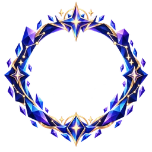
- AzarãoVença 5 duelos contra quem tem 200 pontos de rating ou mais acima de você.
- CampeãoTermine em 1º lugar em 3 eventos de turma.
- Guilda lendáriaVença 3 eventos de turma com a sua guilda.
- Topo do pódioGanhe 3 medalhas de ouro no ranking da turma.
Constância 3
- Mês de verdadeConclua um conteúdo ou atividade por dia, 30 dias seguidos.
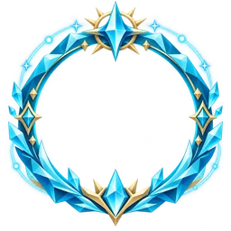
- Dia completoCumpra as 3 missões diárias, 14 dias seguidos.
- Sem folgaConclua algo no sábado e no domingo, 8 fins de semana seguidos.
Precisão 4
- De primeiraTire 100% na primeira tentativa em 10 atividades diferentes.
- Série perfeitaTire 100% em 20 atividades seguidas, sem nenhuma nota menor no meio.
- Contra o relógioTire 100% dentro do tempo em 15 atividades cronometradas.
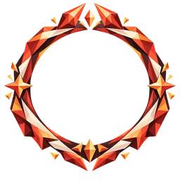
- Volta por cimaTire menos de 50% e depois 100% na mesma atividade, em 10 atividades.
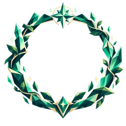
Rotina 4
- MadrugadorConclua algo antes das 8h em 20 dias diferentes.
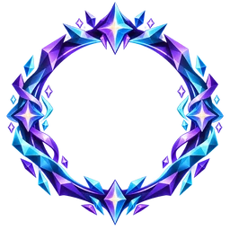
- CorujaConclua algo depois das 22h em 20 dias diferentes.
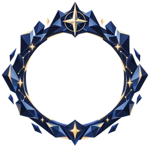
- ImersãoTenha 2 horas de tempo ativo no mesmo dia, em 10 dias diferentes.
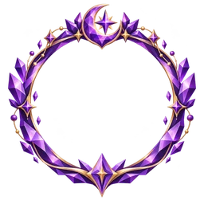
- Semana completaFaça conteúdo, atividade, missão e duelo em cada dia, 7 dias seguidos.
Trilha 2
- Turma zeradaConclua 100% de uma turma com pelo menos 5 tópicos, com média de 90% ou mais nas atividades.
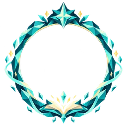
- Sem atalhosConclua uma turma inteira, com pelo menos 5 tópicos, sem pular nenhum conteúdo.
Desempenho 2
- VelocistaConcluiu uma atividade em menos de 2 minutos.
- PerfeccionistaAcertou todas as questões de uma atividade.
Hábito 2
- ConstanteEstudou por 3 dias seguidos.
- MaratonistaAcumulou 120 minutos de estudo.
Progresso 2
- Primeiro PassoCompletou a primeira atividade.
- ExploradorVisitou todos os tópicos da trilha ao menos uma vez.
Três por perfil
Seeker 3
- Primeiras PegadasVisitou três tópicos diferentes e começou a mapear a trilha.
- Cartógrafo CuriosoExplorou cinco tópicos diferentes em busca de novos caminhos.
- Horizonte CompletoConheceu todos os tópicos disponíveis em uma trilha.
Survivor 3
- Retorno FirmeVoltou a estudar por três dias seguidos.
- ResilienteManteve uma sequência de sete dias de estudo.
- Longa JornadaAcumulou trezentos minutos de estudo ativo.
Daredevil 3
- ArrancadaConcluiu uma atividade em ritmo acelerado.
- Ritmo IntensoRepetiu cinco conclusões rápidas sem perder o impulso.
- Sem FreioConcluiu dez atividades rápidas ao longo da jornada.
Mastermind 3
- EstrategistaAlcançou alto desempenho em uma atividade.
- Analista PersistenteRevisou cinco atividades para consolidar o aprendizado.
- Plano MagistralConcluiu uma trilha com desempenho de excelência.
Conqueror 3
- Primeiro TerritórioConcluiu o primeiro tópico da campanha.
- Domínio CrescenteConcluiu cinco tópicos e ampliou seu domínio.
- SoberaniaDominou uma trilha completa.
Socializer 3
- Presença MarcanteParticipou da jornada por três dias seguidos.
- Companheiro de JornadaManteve presença ativa por cinco dias seguidos.
- Elo DuradouroConstruiu uma sequência de dez dias de participação.
Achiever 3
- Colecionador de MarcosConcluiu cinco atividades e ampliou sua coleção de resultados.
- Sequência de OuroConcluiu dez atividades mantendo o avanço constante.
- Mestre da ConclusãoLevou uma trilha inteira até cem por cento.
Biblioteca de elementos
Todos os elementos visuais do app, agrupados por função. As imagens são reduções dos arquivos do app, geradas para esta página.
Componentes de tela
Modelos em HTML, com as medidas e a hierarquia das telas, para comparar os perfis. Eles não substituem os componentes em React Native. Troque o perfil para ver o que muda: só a cor. Os textos e valores são de exemplo.
Faixa de XP
Faltam 30 XP para Trilha aberta
Ações
Abas e filtros
Selos
Modo da Arena
Missão
Pódio
Sua posição
Molduras
Compradas na loja 20
Só com moedas, de 20 a 40. Comprar não muda XP nem posição.
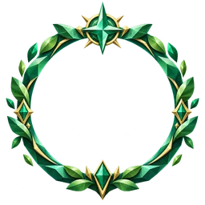
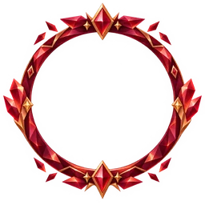
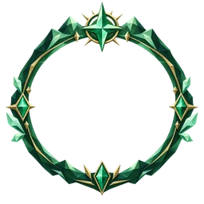
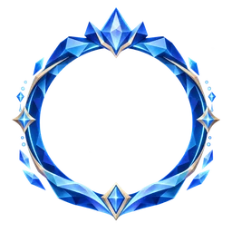
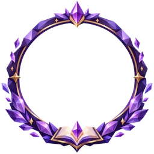
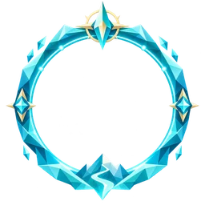
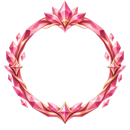
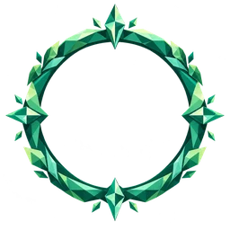
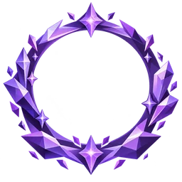
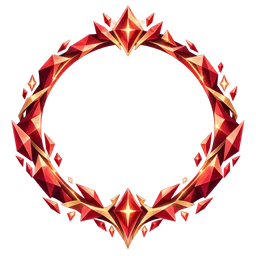
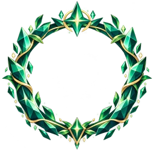
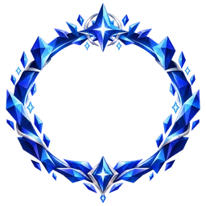
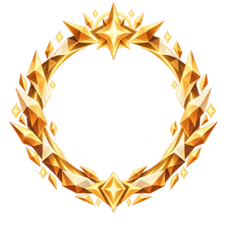
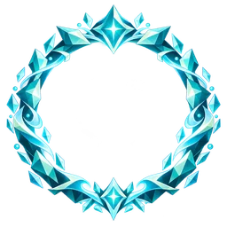
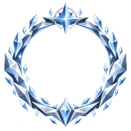
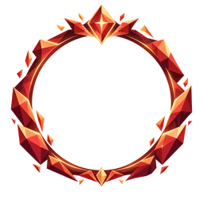
Ganhas por desafio 18
Cada uma exige uma missão difícil e diferente das outras (#1011).
Ganhas por uma ação 2
Duas ações continuam valendo por decisão de produto (#1011).
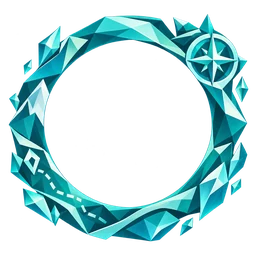
Identidade por perfil
O conjunto que dá a cara de cada perfil.
Emblema
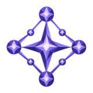
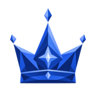
Moldura do perfil
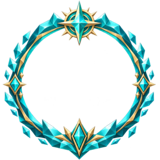
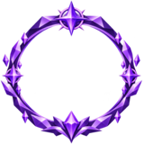
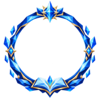
Totem
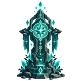
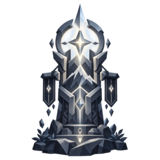
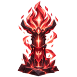
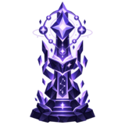
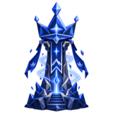
Arena
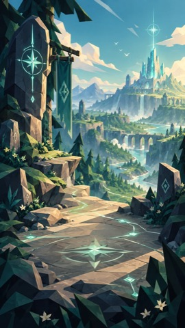
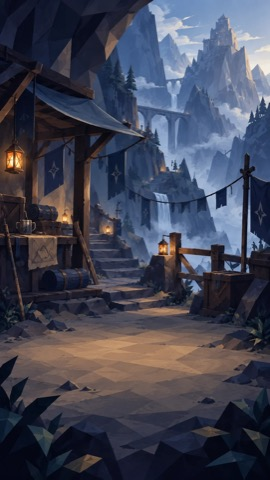
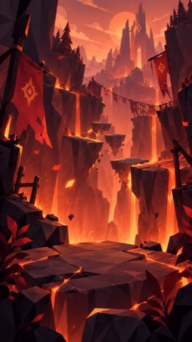
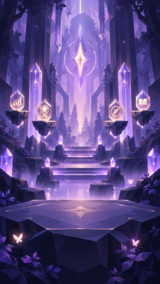
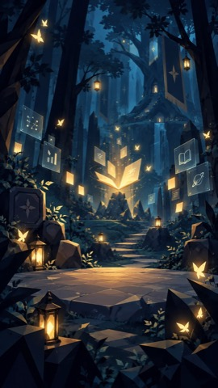
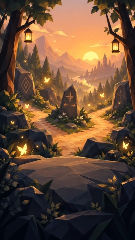
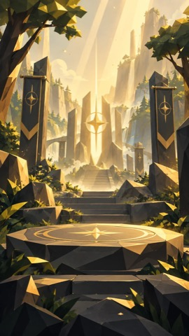
Mapa
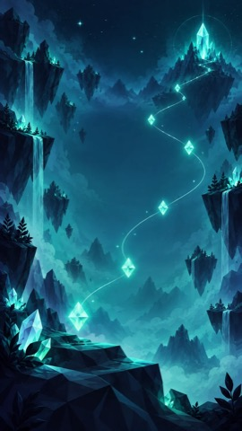
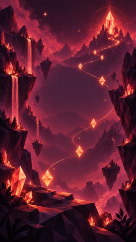
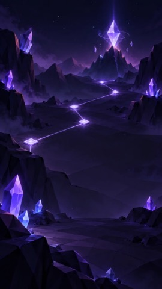
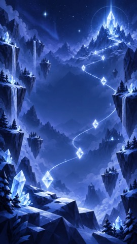
Trilha
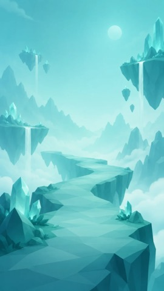
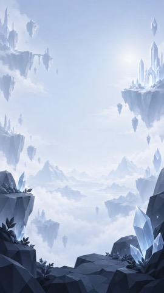
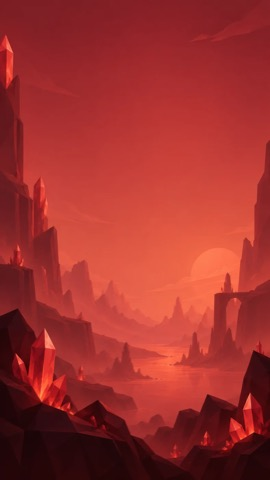
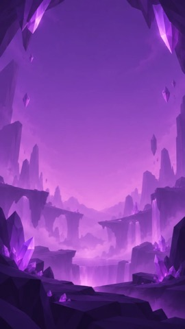
Ícones por perfil
O mesmo significado desenhado sete vezes. A matriz rola de lado no celular.
| Ícone | Seeker | Survivor | Daredevil | Mastermind | Conqueror | Socializer | Achiever |
|---|---|---|---|---|---|---|---|
Moedacoin | |||||||
Lojastore | |||||||
Mochilabag | |||||||
Prazodeadline | |||||||
Nova tentativaretry | |||||||
Dicahint | |||||||
Livrobook | |||||||
Medalhamedal | |||||||
Conquistaachievements | |||||||
Rankingranking | |||||||
Socialsocial | |||||||
Avisosnotifications | |||||||
Ajustessettings |
Objetos
Ilustrações neutras, sem perfil.
Economia
Pódio
Tempo e tentativa
Percurso
Sinais
Ícones de ranking
Bosses
Trinta artes que o professor escolhe por conteúdo. O nome e as falas vêm do modelo, por perfil.
Evidências nos PRs
O que cada PR afirmou ter visto e o que deixou de fora. Os números são do repositório canônico, que é privado, então as capturas foram copiadas para cá. “Não verificado” repete o limite que o PR declarou. Quando a descrição não declara nenhum, a página diz isso, e isso não significa que nada faltou. A situação de cada migration é a da data do PR: hoje todas estão em produção.
Ritmo de desenvolvimento
851 PRs mesclados no repositório canônico, entre 27/08/2026 e 05/11/2026. A tabela conta por palavra-chave no título, então um PR pode entrar em mais de um tema, e PR de correção conta como trabalho. É uma medida de esforço, não de qualidade.
| Tema | Ago | Set | Out | Nov | Total |
|---|---|---|---|---|---|
| Personalização e perfis | 4 | 13 | 59 | 59 | 135 |
| Ranking | 1 | 9 | 29 | 7 | 46 |
| Eventos | 0 | 0 | 26 | 17 | 43 |
| Missões | 0 | 1 | 24 | 12 | 37 |
| Conquistas | 0 | 2 | 21 | 4 | 27 |
| Moedas e loja | 0 | 2 | 16 | 5 | 23 |
| Arena e duelo | 0 | 0 | 10 | 10 | 20 |
| Guildas | 0 | 1 | 11 | 2 | 14 |
| XP | 0 | 2 | 3 | 8 | 13 |
| Boss | 0 | 1 | 3 | 9 | 13 |
| Molduras | 0 | 0 | 2 | 3 | 5 |
Progressão
- 9 testes de estrutura e 9 em Postgres local: piso exato sobe de faixa, última faixa não tem próxima, XP negativo conta como 0
- Em 320 e 360 px, sem rolagem lateral nem texto cortado
- Prévia com dados de exemplo nas paletas Conqueror, Seeker, Achiever e Socializer
- Conta real: a migration ainda não tinha sido aplicada quando o PR foi escrito
- 11 testes em Postgres local, com duelo e cooperativo lado a lado nas cinco contas de XP
- Mutação: quebrar a marca, cada conta ou o piso derruba o teste correspondente
- Upgrade, downgrade e novo upgrade sobre dado existente
- Produção não foi consultada: quantos pontos de duelo existiam
- A cadeia inteira do Alembic rodando do zero
- 12 casos em Postgres local: 85% no tempo paga as faixas de 70 e 80; depois 95% paga só a de 90; a última tentativa com 40% vira a nota, e o bônus pago fica
- Fora do tempo (126 s), a nota vale e o bônus não
- Prazo vencido é recusado ao iniciar e ao responder, e nenhuma função recebe hora do aparelho
- O gabarito continua no aparelho e a pontuação sai do app: a função limita os valores, mas não corrige
- 18 testes de ponta a ponta já falhavam na suíte, e o PR os registra como anteriores
Em 05/11, atividade_tentativas tinha 0 linhas: a regra existe, e ainda não foi usada pelo app em produção.
- Medido em produção antes: 13 de 17 eventos
conteudo_concluidosem referência, e conclusão sem referência vale 0 - 11 comportamentos num Postgres de teste, incluindo pagar só na transição para concluído, sem retroativo
- O banco real
- No Postgres de teste, a dedup foi imitada por um gatilho com a mesma regra, e não é o gatilho real
Efeito colateral declarado: concluir com a API fora agora paga as 2 moedas e conta para missões.
Conquistas e molduras
- Medido em produção antes da correção: 6 avaliadas, 21 ignoradas em silêncio, 0 concessões de conquista de perfil
- As que destravavam não pagavam: o rank soma eventos, e o gatilho não os gravava
- A migração não foi aplicada no PR; a decisão ficou para quem revisou
- 84 testes em Postgres local entre molduras, paridade, XP e diagnóstico, cobrindo as 18 missões e os atalhos que cada uma recusa
- Em produção, só leitura: cada trecho alterado aparece exatamente uma vez
- O fluxo completo a partir de um evento real
A dona do projeto recusou a primeira proposta, que só aumentava a quantidade: as missões tinham de ser diferentes.
- Conferido no banco real, só leitura: o gatilho filtrava por turma, mas não olhava
ativa - A função foi reescrita a partir da definição de produção, com só essa mudança
- A descrição não registra limites
- De ponta a ponta no esqueleto de produção: semente 20/10/10, compra uma vez só, saldo insuficiente, equipar só o que tem, RLS como
authenticatede downgrade - 3188 testes da API e 1305 do app
- Amigo de outra turma aparece com a moldura do perfil: a RLS só mostra colegas de turma
Esta PR derrubou a API, como mostra a próxima evidência. Os testes passaram porque o esqueleto não tinha o índice único de produção.
- Log do Dokploy de 03/11, 13:45 UTC:
conquistas_tipo_comum_uqviolado por dez conquistas do mesmo tipo - 31 testes com Postgres local e 3188 na API completa
- Nada foi aplicado em produção pelo PR: a API voltaria no deploy seguinte
Economia
- 24 testes sobre o SQL gerado pela migração
- Saldo como soma do livro-caixa, para auditar a origem de cada moeda
- Uma suíte inteira verde: 36 falhas iguais às da main, por dependência ausente no ambiente local
- 26 testes novos sobre o SQL gerado
- A autorrevisão pegou dois defeitos antes de virarem código:
FOR UPDATEcom agregação eNOT INque não dispara com NULL
- Suíte verde de verdade: 36 falhas iguais às da main, por dependência ausente na máquina
Missões
- 1.107 testes do app, sem falha
- Testes novos do critério da próxima missão, do destino do “Ir”, do prazo e da recompensa
- A descrição do PR não registra teste em aparelho nativo
- 5 testes em Postgres 17 local: com 3 membros o alvo é 6, com 3 atividades fica em 50% e sem prêmio, com 6 paga os 3
- Missão antiga continua com o alvo da guilda inteira
- Quantas missões de guilda estavam abertas em produção: o banco não respondeu da máquina
- Medido em bloco desfeito: concluir a missão leva o tópico de 0% para 8,33%
- 917 testes da API, 397 do app e 306 do console
- A descrição não registra limites
Uma tabela própria ficaria invisível para o cálculo de progresso, e a barra pararia. As missões diárias e de evento vieram depois, em missoes.
- 1152 testes do app, com 21 das variantes do rastreador
- Prévia nos 7 perfis, com dados de exemplo
- O ícone com conta real: o app parou em “Buscando suas turmas…” com 500/409 do servidor
- A correção do “Ir” só tem teste de unidade: a turma não tinha tópico com atividade
Ranking e eventos
- O corte vale na view, então nome e pontuação dos demais não chegam ao aparelho
- O professor continua vendo a turma inteira
- A descrição não traz medição com alunos: a justificativa vem da literatura citada no PR
- 1.310 testes do app, 0 falhas
- A ênfase dos 7 perfis e as frases dentro e fora do rank
- No Expo web, “Entrar no rank” troca o cartão para posição, frase e vizinhança
- O banco real e o aparelho
A mesma tela com ênfases diferentes: o Conqueror vê a distância até o próximo, e o Socializer vê os colegas.
- 5 testes de ponta a ponta com a view real: rank com 3 alunos sai nulo, e o de 9 sai com o percentual certo
- Elo e líder sem ponto saem nulos, e o mínimo vem da configuração
- CI bloqueado por cobrança: tudo rodou na máquina
- 25 testes em Postgres local com os gatilhos reais: quem não se inscreveu fica fora, quem sai some, 7 inscritos não mostram percentual e 8 mostram
- O duelo conta no rank do evento e não no da turma; ranks sem evento devolvem as mesmas linhas de antes
- RLS com o papel de verdade: aluno de outra turma, professor e anônimo não conseguem inscrever
notificacoes_rank_varrer, só por estrutura- O pódio do evento não congela ao encerrar: quem sai da turma some do resultado
- 1307 testes do app, com 5 do rank do evento
- No Expo web, com Supabase simulado: entrar troca o botão, mostra a frase e destaca a linha do aluno
- O banco real e o aparelho
Arena e boss
- No navegador, logado: abrir o lobby, escolher e trocar o modo, sortear o adversário e liberar “Começar”
- Guilda x guilda desabilitado para quem não tem guilda
- O envio do convite pelo lobby
- Guilda x guilda com guilda de verdade
- Aparelho nativo
- Medido em produção: 3 linhas com nomes iguais ou quase iguais e falas trocáveis entre perfis
- 59 testes, incluindo o caso exato de produção e o limite de 60 caracteres
- A qualidade das falas que o modelo gera com o prompt novo: não havia chave do modelo na máquina
- 12 testes em Postgres local: recusas sem deixar desafio pela metade, quem saiu do evento não aceita mas recusa, e o rank de outro evento não conta
- 56 testes somando os vizinhos de rank e XP
- Três funções da arena entraram como dublês: o que está em teste é o que a migration acrescenta em volta delas
- Validado ao vivo em subtransação abortada: professor dono lê 1 linha (eram 0), outro professor 0, e anônimo é barrado
- O aluno segue sem ler a tabela direto, por decisão
- A descrição não registra limites
Era RLS ligada sem policy: fecha em silêncio, e a tela desenha o texto padrão.
- 7 testes em Postgres local: alerta com o prêmio de missão dobrando o XP por atividade, duelo fora da conta e “sem dado” com poucos alunos
- Duas tabelas e duas funções entraram como dublês
- Não há guilda em produção: a medida ainda não tem o que medir
Personalização
- Medido em produção antes: 1 sugestão desde 25/08 e 0 revisões
- 11 testes em Postgres local, com RLS lida como aluno e downgrade
- O app rodando, só testes
- A chamada real ao modelo para a demanda
- Editar o arco enfileira a regeração da turma, e falha na fila não desfaz o que o professor salvou
- O teste pegou 35 alvos em vez de 28 numa fusão, e o gatilho novo passou a deduplicar
- A migration não estava aplicada em produção quando o PR foi escrito
- Playwright em 7 tamanhos, de 360×640 a 1920×1080: nenhuma página rola
- O exemplo visual usa os tokens do perfil
- Celular deitado: um bloco muito alto ainda rola de 11 a 60 px, como reserva para não cortar nada
- Só texto: a documentação e os comentários deixam de usar estilos de aprendizagem como motivo
- Não muda comportamento, nem mede efeito
- 6 testes em Postgres local com os números calculados à mão, e 7 de estrutura. Mutação no filtro derruba 2
- Abaixo de 5 alunos, a célula sai nula e marcada
amostra_insuficiente
- Resultado: não há amostra em produção, então a medida ainda não diz qual formato funciona
- 13 testes em Postgres local com o papel real: o aluno retido não vê base, card, falas nem job, e o professor dono vê
- Mutação: sem a policy, o teste principal falha
- Não há coorte registrada:
estudo_coorteestava vazia em 04/11
A trava esconde e não impede a geração: assim, no dia do corte, o material já está pronto.
- 3343 testes da API
- No build web com backend falso: o Guardião aparece e o chat abre
- Android e iOS
- Quatro perfis no módulo
- A resposta do modelo real para os perfis novos
- Os termos da Gemini API exigem 18 anos: é a causa da mudança
- Na rota de menor, nenhum cliente de modelo nasce, mesmo com as chaves; o RAG não busca, e TTS e enriquecimento não chamam nada
- Menor com tudo autorizado recebe 403 no mentor
test_migrations_postgres: o PR não tem migration
Aluno sem data de nascimento também fica sem IA. Trilha, questões e progresso seguem funcionando.
Geração de mídia
- Medido em produção: 7 de 7 áudios falharam num reprocessamento (5 por cota do plano gratuito, 2 por crédito esgotado)
- 18 testes. Com o código antigo, 30 s de espera e o erro no fim; com a correção, passa sem espera
- O crédito em si: a reserva troca a falha por custo
- A apresentação, que falhava por outro caminho
- Medido em produção: cerca de 30 pipelines completos num dia de cota, e um perfil com 7 de 8 partes prontas marcado como falha
- 479 testes do microservice. Com só a parte 2 sem voz: uma chamada de TTS, nenhuma de texto nem de deck
- A descrição indica testes com rede e banco falsos, não uma geração real
- 3106 testes da API, com 22 casos da regra: principal, secundário, turma vazia, pedido explícito e aluno sem perfil
- O banco real: as consultas novas só têm teste de estrutura
- Medido: o mesmo conteúdo saiu com 8 blocos e 2 áudios em dois perfis, e outro perfil com 7 blocos saiu com 7 áudios, só pelo tamanho do roteiro
- 506 testes do microservice
- A contagem real de blocos desse conteúdo
- Material já gerado não muda sozinho
- 13 testes em Postgres local com papéis reais, incluindo forja pelo cliente
- No desvio, nem enriquecimento, nem cards, nem microservice são chamados
- Um ciclo completo com worker, microservice e TTS reais
- Em produção, em 04/11, 15 conteúdos e nenhum texto repetido: o ganho é para o que vier
- 6 testes em Postgres local, com um modelo que falha se for chamado
- 3423 testes da API
- Um ciclo real do worker com modelo e Storage
- Corrida em Postgres local: antes, 3 pedidos abriam 3 jobs; depois, 1, e passou 5 vezes seguidas
- A origem dos 3 pedidos: duplo clique ou reenvio automático não foi confirmado
- Navegador e produção
- 13 testes em Postgres local com as policies reais e números calculados à mão
- Turma alheia recebe recusa, não painel zerado
- As metas de geração são hipótese: nunca houve duração por alvo medida antes
- 216 testes, com contraste AAA em todo par texto × superfície
- Os 7 decks renderizados e abertos no Chromium, em 390×844 e 1366×820, sem erro de página
- Decks que já estavam no R2 não mudam
- No Expo web, o XP do deck se perde
Telas de referência
- 1.279 testes do app, sem falha, com testes novos de quadro estreito e de 1280×720
- Capturas em 1024, 1280 e 1440 px com dados marcados como MOCK
- A árvore, a lista e o mapa do celular: só a vista de mapa em tela larga muda
- 1.098 testes do app, com contraste de pelo menos 7:1 no texto nos 7 perfis
- Capturas no Expo web, com dados fictícios numa rota de prévia
- Android e iOS nativos
- A tela com dados reais, logado
- No navegador, com conta de teste e tela de celular: a Loja abre pelo topo e o Sair fica no fim
- 1.056 testes do app
- Metas, Mistério e Squad, um a um
- No navegador, com conta de teste, em 360×640 e 430×932: estilos Painel Analítico e Arena Tática
- Android e iOS nativos
- Metas, Mistério e Squad, um a um
- Capturas dos 7 perfis, da variante neutra e da transição
- A descrição não registra limites.
- 1245 testes do app, e 44 de 44 do chat
- No navegador, logado: barra de 360 px nos 7 perfis e lateral em 1280 px
- Aparelho
- O número zerando numa conversa de verdade: a conta não tem amigos
O número de não lidas é a pista que varia. Nada no ícone pulsa nem sorteia, porque o público é jovem e fabricar saliência assim é o caminho a evitar. O PR explica isso com a literatura de recompensa. A nota do próprio PR diz que os pares fechado e aberto entraram pela #835.
Fontes
scripts/site_docs/guardioes.pydocs/tcc/gamificacao/catalogo-2026-11-05.jsondocs/tcc/gamificacao/uso-2026-11-05.jsonmobile/src/constants/molduras.tsmobile/src/constants/profileUtilityIcons.tsmobile/src/utils/brainHexCapabilities.tsmobile/src/utils/profileShellPalette.tsfrontend/src/styles/console-theme.cssapi/alembic/versions/20261105_24_molduras_tarefas_dificeis.py